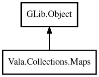

Maps
Object Hierarchy:

Description:
public class Maps : Object
Static utility methods for HashMap operations.
Maps provides high-level operations like merge, filter, mapValues, invert, and entries that would otherwise require 5-15 lines of manual
loop code.
Example:
var defaults = new HashMap<string, string> (GLib.str_hash, GLib.str_equal);
defaults.put ("theme", "light");
defaults.put ("lang", "en");
var overrides = new HashMap<string, string> (GLib.str_hash, GLib.str_equal);
overrides.put ("theme", "dark");
var config = Maps.mergeString (defaults, overrides);
// config: {"theme": "dark", "lang": "en"}
Content:
Static methods:
- public static string computeIfAbsentString (HashMap<string,string> map, string key, owned SupplierFunc<string> fn)
Returns the value for the key. If the key is absent, computes the
value using the supplier function, stores it in the map, and returns it.
- public static ArrayList<Pair<string,string>> entriesString (HashMap<string,string> map)
Returns an ArrayList of key-value Pairs from the map.
- public static HashMap<string,string> filterString (HashMap<string,string> map, owned BiPredicateFunc<string,string> fn)
Returns a new map containing only entries that match the predicate.
- public static HashMap<string,string> fromPairsString (ArrayList<Pair<string,string>> pairs)
Creates a HashMap from a list of key-value Pairs. If duplicate keys
exist, later Pairs overwrite earlier ones.
- public static string getOrDefaultString (HashMap<string,string> map, string key, string defaultValue)
Returns the value for the key, or the default value if the key is not
found.
- public static HashMap<string,string> invertString (HashMap<string,string> map)
Returns a new map with keys and values swapped. If multiple entries
have the same value, later entries overwrite earlier ones in the result.
- public static bool isEmptyString (HashMap<string,string> map)
Returns whether the map is empty.
- public static ArrayList<string> keysString (HashMap<string,string> map)
Returns an ArrayList of all keys in the map.
- public static HashMap<string,string> mapKeysString (HashMap<string,string> map, owned MapFunc<string,string> fn)
Returns a new map with all keys transformed by the function. Values
are preserved. If multiple keys map to the same new key, later entries overwrite earlier ones.
- public static HashMap<string,string> mapValuesString (HashMap<string,string> map, owned MapFunc<string,string> fn)
Returns a new map with all values transformed by the function. Keys
are preserved.
- public static HashMap<string,string> mergeString (HashMap<string,string> a, HashMap<string,string> b)
Merges two string maps into a new map. When both maps contain the same
key, the value from the second map takes priority.
- public static ArrayList<string> valuesString (HashMap<string,string> map)
Returns an ArrayList of all values in the map.
Creation methods:
Inherited Members:
All known members inherited from class GLib.Object
- @get
- @new
- @ref
- @set
- add_toggle_ref
- add_weak_pointer
- bind_property
- connect
- constructed
- disconnect
- dispose
- dup_data
- dup_qdata
- force_floating
- freeze_notify
- get_class
- get_data
- get_property
- get_qdata
- get_type
- getv
- interface_find_property
- interface_install_property
- interface_list_properties
- is_floating
- new_valist
- new_with_properties
- newv
- notify
- notify_property
- ref_count
- ref_sink
- remove_toggle_ref
- remove_weak_pointer
- replace_data
- replace_qdata
- set_data
- set_data_full
- set_property
- set_qdata
- set_qdata_full
- set_valist
- setv
- steal_data
- steal_qdata
- thaw_notify
- unref
- watch_closure
- weak_ref
- weak_unref